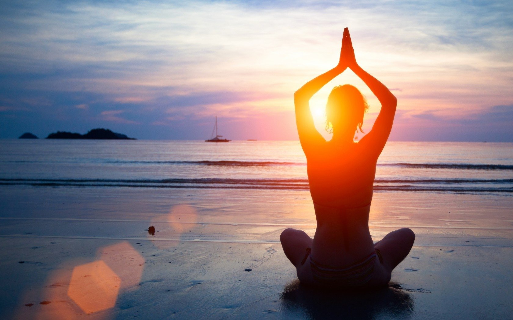

¿Qué es el Hatha Yoga y cuáles son sus
beneficios?
Hatha Yoga es un término paraguas que engloba a todas las formas físicas de yoga. Un
estilo que supone una importante introducción a los fundamentos de esta disciplina, con un enfoque
clásico de las posturas y técnicas de respiración. Seguramente, la modalidad de yoga más conocida en el
mundo occidental. Y en mucho casos incluso se practica en forma de estiramientos previos o posteriores a
otra clase de entrenamientos.

El Hatha Yoga afirma que es necesario aprender a
controlar nuestro cuerpo para aprender también a controlar nuestra mente. Mientras que el Yoga Mental
hace lo contrario, intentar primer dominar la mente para poder dominar el cuerpo. Con lo cual, podríamos
definir el Hatha Yoga como un conjunto de ejercicios que buscan la liberación a través del dominio del
cuerpo, llevando a cabo distintas posturas físicas y aprendiendo a controlar la respiración.
En sánscrito significa sol (masculino) y luna (femenino). Con lo cual, el objetivo del Hatha Yoga es conseguir un equilibrio entre las energías masculina y femenina que existen en nuestro interior, mediante el uso de posturas que buscan encontrar el equilibrio entre fuerza y flexibilidad. La intuición, vinculada con la capacidad de recibir, de imaginar y el hemisferio cerebral derecho. La razón, para construir, evaluar y el hemisferio cerebral izquierdo.
El Hatha Yoga considera el cuerpo como un instrumento, y como tal debe mantenerse en las mejores condiciones posibles para alcanzar la consciencia superior. Y, aunque es cierto que puede practicarse con el único objetivo de mejorar la salud, lo cierto es que es además un excelente medio para conseguir bienestar mental y el mejor camino hacia la meditación.
La sincronización de la respiración consciente y el movimiento corporal favorece tanto la realización y efectividad de los ejercicios como la disminución del estrés. Pero además, ayuda a gestionar mejor nuestras emociones, a relacionarnos mejor con nuestro entorno, a aumentar la claridad mental y a permitir el reencuentro con nuestro espíritu, nuestro ser superior.
Al diferencia de otras modalidades físicas, que tienen como objetivo exhibir el cuerpo o prepararlo para competir, el Hatha Yoga no se centra en el culto al cuerpo, sino todo lo contrario: lo armoniza para que podamos olvidarlo, y de esta manera ir en busca de objetivos mentales y espirituales.
En sánscrito significa sol (masculino) y luna (femenino). Con lo cual, el objetivo del Hatha Yoga es conseguir un equilibrio entre las energías masculina y femenina que existen en nuestro interior, mediante el uso de posturas que buscan encontrar el equilibrio entre fuerza y flexibilidad. La intuición, vinculada con la capacidad de recibir, de imaginar y el hemisferio cerebral derecho. La razón, para construir, evaluar y el hemisferio cerebral izquierdo.
El Hatha Yoga considera el cuerpo como un instrumento, y como tal debe mantenerse en las mejores condiciones posibles para alcanzar la consciencia superior. Y, aunque es cierto que puede practicarse con el único objetivo de mejorar la salud, lo cierto es que es además un excelente medio para conseguir bienestar mental y el mejor camino hacia la meditación.
La sincronización de la respiración consciente y el movimiento corporal favorece tanto la realización y efectividad de los ejercicios como la disminución del estrés. Pero además, ayuda a gestionar mejor nuestras emociones, a relacionarnos mejor con nuestro entorno, a aumentar la claridad mental y a permitir el reencuentro con nuestro espíritu, nuestro ser superior.
Al diferencia de otras modalidades físicas, que tienen como objetivo exhibir el cuerpo o prepararlo para competir, el Hatha Yoga no se centra en el culto al cuerpo, sino todo lo contrario: lo armoniza para que podamos olvidarlo, y de esta manera ir en busca de objetivos mentales y espirituales.
Los 5 principios del Hatha Yoga
El Hatha Yoga es un ejercicio muy completo que nos ayuda a entrenar todo nuestro cuerpo de maneras muy
distintas. Y es que, gracias a él, no solamente podemos controlar o aliviar lesiones, sino también
reducir el estrés y compartir buenos momentos.
En cualquier tipo de Hatha Yoga están presentes las posturas físicas, las técnicas de respiración y la meditación. Tres elementos que convierten al Hatha Yoga en una herramienta muy útil para lograr la transformación tanto física como mental, porque requiere de que prestemos una atención constante a la respiración y los tres ayudan a estar presente en cada postura.
Las posturas físicas (asanas) fortalecen el cuerpo, las técnicas de respiración (pranayamas) nos ayudan a controlar la respiración y a manipular la energía vital y la meditación (dhyana) nos ayudan a centrar y calmar la mente. Las asanas son la parte más física, mientras que las otras están más relacionadas con la meditación y la relajación.
1- Pensamiento positivo y meditación: ayuda a purificar la mente y a alcanzar la elevación espiritual. Teniendo en cuenta que todo lo que queda en el inconsciente influye tarde o temprano en nuestro cuerpo físico.
2- Precisión de las asanas: ayuda a mejorar la condición funcional de todos los sistemas y la flexibilidad las articulaciones, tonificando y estirando los músculos. A diferencia de otros tipos de yoga más dinámicos como el Vinyasa Flow o al Ashtanga Yoga, en el Hatha Yoga las asanas se practican de manera lenta para conseguir una postura estable, salud y flexibilidad. Manteiendo cada una de las posturas durante un determinado número de respiraciones. De esta forma, se lleva a cabo un buen trabajo sin movimiento de fuerza con nuestro propio peso corporal. Pudiendo adaptarse a los diferentes participantes de una clase, tanto a través d ela modificación de las posturas como del uso de accesorios para realizarlas.
3- Respiración adecuada: ayuda a hacer fluir la energía vital a través de todo nuestro cueerpo, garantizando que los niveles de oxígeno sean óptimos y que las posturas puedan llevarse a cabo con mayor efectividad y precisión.
4- Relajación adecuada: ayuda a tomar consciencia del presente, a alcanzar el estado de plenitud y a enfocarse en la única realidad verdadera que es nuestro ser como espíritus.
5- Alimentación saludable: ayuda a mantener nuestro cuerpo sano, ligero, flexible y libre de toxinas, recordando en todo momento que todo lo que entra en nuestro cuerpo debe nutrirnos y no enfermarnos. Tanto a nivel físico como emocional, mental y espiritual.
En cualquier tipo de Hatha Yoga están presentes las posturas físicas, las técnicas de respiración y la meditación. Tres elementos que convierten al Hatha Yoga en una herramienta muy útil para lograr la transformación tanto física como mental, porque requiere de que prestemos una atención constante a la respiración y los tres ayudan a estar presente en cada postura.
Las posturas físicas (asanas) fortalecen el cuerpo, las técnicas de respiración (pranayamas) nos ayudan a controlar la respiración y a manipular la energía vital y la meditación (dhyana) nos ayudan a centrar y calmar la mente. Las asanas son la parte más física, mientras que las otras están más relacionadas con la meditación y la relajación.
1- Pensamiento positivo y meditación: ayuda a purificar la mente y a alcanzar la elevación espiritual. Teniendo en cuenta que todo lo que queda en el inconsciente influye tarde o temprano en nuestro cuerpo físico.
2- Precisión de las asanas: ayuda a mejorar la condición funcional de todos los sistemas y la flexibilidad las articulaciones, tonificando y estirando los músculos. A diferencia de otros tipos de yoga más dinámicos como el Vinyasa Flow o al Ashtanga Yoga, en el Hatha Yoga las asanas se practican de manera lenta para conseguir una postura estable, salud y flexibilidad. Manteiendo cada una de las posturas durante un determinado número de respiraciones. De esta forma, se lleva a cabo un buen trabajo sin movimiento de fuerza con nuestro propio peso corporal. Pudiendo adaptarse a los diferentes participantes de una clase, tanto a través d ela modificación de las posturas como del uso de accesorios para realizarlas.
3- Respiración adecuada: ayuda a hacer fluir la energía vital a través de todo nuestro cueerpo, garantizando que los niveles de oxígeno sean óptimos y que las posturas puedan llevarse a cabo con mayor efectividad y precisión.
4- Relajación adecuada: ayuda a tomar consciencia del presente, a alcanzar el estado de plenitud y a enfocarse en la única realidad verdadera que es nuestro ser como espíritus.
5- Alimentación saludable: ayuda a mantener nuestro cuerpo sano, ligero, flexible y libre de toxinas, recordando en todo momento que todo lo que entra en nuestro cuerpo debe nutrirnos y no enfermarnos. Tanto a nivel físico como emocional, mental y espiritual.
¿En qué consiste una sesión de Hatha Yoga?
¿Te interesa saber cómo funciona una clase de Hatha Yoga? Antes de cada sesión, se dedica un momento a
prepararse espiritualmente y a conectar el cuerpo con su origen sagrado. Tienes que tener en cuenta que
en yoga no se estimula la competitividad ni la comparación con los demás, ya que esto es considerado
como un acto de ego que supone un obstáculo para la evolución espiritual. Por eso, la mejor actitud
mental para practicarla es considerarse como parte de un todo universal, creativo, único y cuya
evolución es individual.
La consecución de este objetivo es tomar conciencia del momento presente y centrarse solamente en el «ahora» como lo único que ocurre. El pasado y el futuro son ilusiones, todo lo que existe es el ahora y es perfecto tal y como es.
Como la mente y el cuerpo no son entidades contrarias ni separadas, sino dos dimensiones del mismo ser, el Hatha Yoga busca que esta conexión entre ambos elementos de mantenga, incluso cuando todo el esfuerzo parece ser solamente físico.
La práctica disciplinada de Hatha Yoga mejora la flexibilidad, la estabilidad, la firmeza y las armonías mental, física, espiritual y emocional. La mente se vuelve más clara, serena y segura, nuestra fuerza interior renace, los movimientos se hacen más precisos y se mejoran los reflejos.
La consecución de este objetivo es tomar conciencia del momento presente y centrarse solamente en el «ahora» como lo único que ocurre. El pasado y el futuro son ilusiones, todo lo que existe es el ahora y es perfecto tal y como es.
Como la mente y el cuerpo no son entidades contrarias ni separadas, sino dos dimensiones del mismo ser, el Hatha Yoga busca que esta conexión entre ambos elementos de mantenga, incluso cuando todo el esfuerzo parece ser solamente físico.
La práctica disciplinada de Hatha Yoga mejora la flexibilidad, la estabilidad, la firmeza y las armonías mental, física, espiritual y emocional. La mente se vuelve más clara, serena y segura, nuestra fuerza interior renace, los movimientos se hacen más precisos y se mejoran los reflejos.